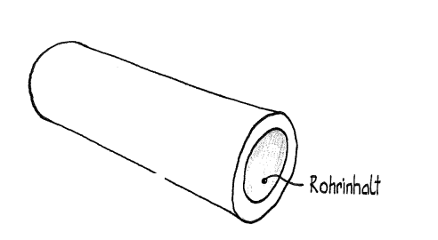
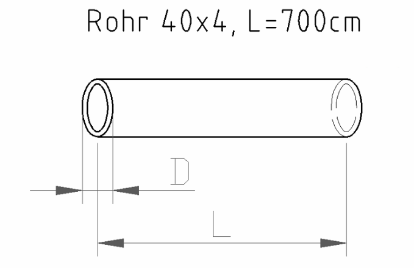
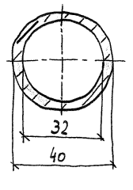

4 Rohrinhalt
Öffnet YouTube. Braucht Internet.
Zuerst die Pflicht-Aufgaben (★★). Die Extra-Aufgaben (★★★) am Ende sind freiwillig.
Tippe in die Kästchen. Dann tippe auf „Prüfen“.
Grün = richtig, Rot = schau noch einmal.
Rohrinhalt = wie viel Wasser in ein Rohr passt.

Das Wasser ist innen im Rohr. Darum rechnest du mit dem Innendurchmesser di.
DA = Außendurchmesser
di = Innendurchmesser
s = Wandstärke (wie dick die Rohrwand ist)
G = Grundfläche (der Kreis innen)
L = Rohrlänge
VR = Volumen vom Rohrinhalt
G = di² · π : 4
VR = G · L
Wandstärke: DA = di + 2 · s und di = DA − 2 · s
Die Wand ist links und rechts. Darum 2 · s.
Beispiel


Rohr 40x4 heißt: Außendurchmesser 40 mm, Wandstärke 4 mm.
Gegeben: DA = 40 mm = 4 cm, di = 32 mm = 3,2 cm, L = 7000 mm = 700 cm
G = 3,2² · π : 4 = 8,04 cm²
V = 8,04 cm² · 700 cm = 5628 cm³ ≈ 5,63 dm³ = 5,63 Liter
Rechne mit cm. Dann bekommst du cm³. 1000 cm³ = 1 dm³ = 1 Liter.
Aufgabe 1 ★★
Rohr: DA = 23 mm, di = 20 mm, L = 560 cm. Berechne s, G und VR.
s = (DA − di) : 2. Für G rechne in cm: 20 mm = 2 cm.
| s = | mm |
| G = | cm² |
| VR = | cm³ |
Aufgabe 2 ★★
Rohr: di = 48 mm, s = 0,8 cm, L = 3,2 dm. Berechne DA, G und VR.
0,8 cm = 8 mm. Für VR: G in cm² umrechnen (: 100) und 3,2 dm = 32 cm.
| DA = | mm |
| G = | mm² |
| VR = | cm³ |
Extra: Wenn du noch Zeit hast ★★★
Pflicht geschafft! Du darfst hier aufhören.
Diese Aufgaben sind freiwillig. Hier musst du oft umformen und umrechnen.
Aufgabe 3 ★★★
Berechne, was fehlt. Achte auf die Einheiten!
di = DA − 2 · s. Für G: di von mm in cm umrechnen (: 10). Für VR: G in cm² mal L in cm, dann : 1000 für dm³.
| Rohr 1 | |
|---|---|
| DA | 75 mm |
| di | mm |
| s | 13 mm |
| G | cm² |
| L | 332 cm |
| VR | dm³ |
Aufgabe 4 ★★★
Berechne, was fehlt. Achte auf die Einheiten!
| Rohr 2 | |
|---|---|
| DA | mm |
| di | 183 mm |
| s | 3 mm |
| G | cm² |
| L | 168 mm |
| VR | cm³ |
Aufgabe 5 ★★★
In das Rohr passen 3,6 Liter. Wie lang ist das Rohr?
3,6 Liter = 3600 cm³. Umgeformt: L = VR : G. Du bekommst cm. Dann in mm umrechnen.
| Rohr 3 | |
|---|---|
| DA | mm |
| di | 90 mm |
| s | 3 mm |
| G | cm² |
| L | mm |
| VR | 3,6 Liter |